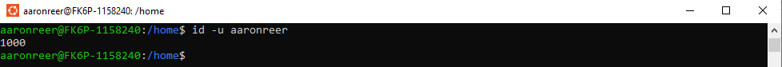

Software containers & data#
Learning objectives#
get local data into containers
get online data into containers
learn different ways of getting data into containers (e.g. store them in container or mount them into container during runtime)
Motivation#
From time to time, it might be advised or even necessary to provide some data that comes with your Docker container, e.g. for reproducible purposes, tutorials, etc. But how do we get data into our Docker containers? Well, there are two different ways of equipping your container with additional data:
One can either copy the data inside the container during its build. This way the respective data is permanently stored inside our image. As mentioned above, this functionality can come in handy if you want to provide tutorials or user-manuals to the end-user of your container or some test data to make sure the containers behaviour matches the expected behaviour.
However, sometimes it is required to get data into our container in a more generic way during runtime, e.g. if we have set-up an automated analysis workflow within our container and want the user to provide their own data, such that the analysis can be run on that data inside the container. To achieve this, we can mount a directory from our local computer to a directory within the container. This way we can give the container access to specific directories on our local computer, e.g. to load data from our machine into the container. Since mounting is a bidirectional process we can also allow the container to write outputs to sepcific directories on our local machine.
In the following sections, we will go over both ways of getting data inside your conatiner and provide some practical examples.
Getting Data into a container permanently#
Let’s say we want to put a picture of whale into our Docker container because we’re such docker fans and whales are nothing but awesome, but we’ve learned that the state of a given container cannot be changed from the mounting part of this workshop.
We can achieve this by copying the data (i.e. our .png file) into our Docker container during its build, hence must include respective instruction in our Dockerfile. The easiest way is to store the data you want to include in the same directory as the Dockerfile, e.g.
```
mv Desktop/happy_whale.jpg Desktop/my_first_docker
```
Now, we add a line to our Dockerfile that indicates that this image should be copied to a specific location inside our Docker container, e.g. /home/images
```
COPY ./happy_whale.jpg /home/images/happy_whale.jpg
```
And you guessed it: time to rebuild!
```
docker build -t myfirstdocker Desktop/my_first_docker
```
If we now run our freshly build Docker container and check the contents of /home, we find the folder images and in it our happy_whale.jpg
Michaels-MBP:~ me$ docker run -it --rm myfirstdocker
- ls
Practical application#
With that, we can include almost any kind of data of almost any size. As we not only like Docker, but also data processing using e.g., pandas and sharing our knowledge about it, let’s include a small respective tutorial in the form of a jupyter notebook, as well as a small sample dataset. In this way you could also include demogrpahic data, READMEs or any additional data necessary for a processing pipeline.
To this end, we again simply copy the respective files from the examples folder to our my_first_docker folder
```
mv Desktop/examples/* Desktop/my_first_docker
```
And subsequently, we again add some lines of code that do the respective copying, creating a nice structure:
```
COPY ./python_pandas.ipynb /home/notebooks/
COPY ./beers.csv /home/notebooks/data
```
rebuild the container and as expected, everything is there and in place!
output
Incorporating online data#
In case you don’t have or don’t want everything that should go into the Docker container stored locally, you can also use command line functionality to download data, e.g., using the bash command curl. This can be very helpful when pulling data from an online repository.
Simply add the respective command to the Dockerfile:
RUN curl --output /home/images/happy_whale_2.jpg https://cdn.pixabay.com/photo/2017/01/01/20/11/humpback-whale-1945416_960_720.jpg
And checking the outcome, everything worked like a charm!
output
Mounting data inside and outside of your container#
Well, all of you should have heard about mounting before in our quickstart section. Once again, mounting describes a mapping from paths outside the container (e.g. your local machine or online data repositories) to paths inside the container.
Now, who remembers the flag we have to use within the docker run command to enable mounting ? …
flag for mounting
…correct, you have to use the -v flag within the docker run command to specify the mounted directories. This flag can be untilized as follows:
docker run -v path/outside/container:/path/inside/container name_of_image
You can also restrict the rights of mounted paths, e.g. read-only in case any modification on your local system should be prevented. This ca be done by adding a :ro. It should look something like this:
docker run -v path/outside/container:/path/inside/container:ro name_of_image
Note: If you use a mounted directory to store output, produced inside your container, on your local filesystem, make sure that you have administrator rights on your own machine to access/modify the output. Since the container writes the output as a administrator, you will not be able to access/modify your data if you dont have superuser rights, e.g. when working on a compute server. One way to avoid this issue, is the user flag: -u which can be utilized within the docker run command as follows:
docker run -u <userid> name_of_image
How do I get my userid?
Well, thats easy! Simply type
id -u <yourusername>
into your terminal and your userid should appear.

Add practical example here?
Input/Output - administrator rights#
notes re folder structures here
input
Docker & data - discussion#
What would you like to have in your Docker containers?
What type of data are you planning on working with?
Let us know and we’ll go through the respective steps!